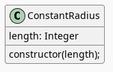

Generative Art: A Wavy Circle
Table of Contents
A Constant Radius

class ConstantRadius {
constructor(length) {
this.length = length;
}; // constructor
}; // Constant Radius
A Circulator
class Circulator {
_to_radians;
constructor(angle_increment, center_x, center_y, radius, p5) {
this.angle = 0;
this.angle_increment = angle_increment;
this.center_x = center_x;
this.center_y = center_y;
this.radius = radius;
this.p5 = p5;
}; // constructor
get to_radians() {
if (!this._to_radians) {
this._to_radians = Math.PI/180;
};
return this._to_radians;
}; // to-radians
get theta() {
return this.angle * this.to_radians;
}; // theta
get theta_opposite() {
return this.theta + Math.PI;
}; // theta-opposite
get x_start() {
return this.center_x + this.radius.length * Math.cos(this.theta);
}; // x-start
get y_start() {
return this.center_y + this.radius.length * Math.sin(this.theta);
}; // y-start
get x_end() {
return this.center_x + this.radius.length * Math.cos(this.theta_opposite);
}; // x-end
get y_end() {
return this.center_y + this.radius.length * Math.sin(this.theta_opposite);
}; // y-end
draw() {
this.p5.line(this.x_start, this.y_start, this.x_end, this.y_end);
this.angle += this.angle_increment;
}; // draw
}; // Circulator
const WIDTH = 500;
const HEIGHT = WIDTH;
const POINT_COLOR = "RoyalBlue";
const CENTER_X = WIDTH/2;
const CENTER_Y = HEIGHT/2;
const RADIUS = WIDTH/2;
function circulator_sketch(p5) {
let circulator;
p5.setup = function() {
p5.createCanvas(WIDTH, HEIGHT);
p5.background("white");
p5.stroke(POINT_COLOR);
p5.fill(POINT_COLOR);
const radius = new ConstantRadius(RADIUS);
circulator = new Circulator(1, CENTER_X, CENTER_Y, radius, p5);
}; // setup
p5.draw = function() {
circulator.draw();
}; // draw
}// circulator_sketch
new p5(circulator_sketch, CIRCULATOR_DIV);
A Fading Circulator

class HSLFader {
_increment = 1;
_stroke_color;
_next_color
constructor(circulator, p5, hue=225, saturation=72.7, lightness=56.9) {
this.circulator = circulator;
this.p5 = p5;
this.hue = hue;
this.saturation = saturation;
this.lightness = lightness;
}; // constructor
get increment() {
let lightness = this.p5.lightness(this.stroke_color);
if (lightness >= 100) {
this._increment = -1;
} else if (lightness <= 50) {
this._increment = 1;
}; // if-else-if
return this._increment;
}; // increment
get stroke_color() {
if (!this._stroke_color) {
this.p5.colorMode(this.p5.HSL);
this._stroke_color = this.p5.color(this.hue,
this.saturation,
this.lightness);
}; // if
return this._stroke_color;
}; // stroke_color
get next_color() {
this._stroke_color = this.p5.color(
this.hue, this.saturation,
this.p5.lightness(this.stroke_color) + this.increment
)
return this.stroke_color;
}; // next-color
draw() {
this.p5.stroke(this.next_color);
this.circulator.draw();
}; // draw
}; // CirculaterFader
function hsl_fader_sketch(p5) {
const WIDTH = 500;
const HEIGHT = WIDTH;
const POINT_COLOR = "RoyalBlue";
const CENTER_X = WIDTH/2;
const CENTER_Y = HEIGHT/2;
const RADIUS = WIDTH/2;
let fader;
p5.setup = function() {
p5.createCanvas(WIDTH, HEIGHT);
p5.background("white");
p5.stroke(POINT_COLOR);
p5.fill(POINT_COLOR);
const radius = new ConstantRadius(RADIUS);
const circulator = new Circulator(1, CENTER_X, CENTER_Y, radius, p5);
fader = new HSLFader(circulator, p5);
}; // setup
p5.draw = function() {
fader.draw();
}; // draw
}; // hsl-fader-sketch
new p5(hsl_fader_sketch, HSL_FADER_DIV);
A Noisy Radius
class NoisyRadius {
_noise_coordinate = 0;
constructor(scale, p5, noise_step=0.005) {
this.scale = scale;
this.noise_step = noise_step;
this.p5 = p5;
}; // constructor
get noise_coordinate() {
this._noise_coordinate += this.noise_step;
return this._noise_coordinate;
}; // noise_coordinate
get length() {
this._length = (this.p5.noise(this.noise_coordinate)
* this.scale) + 1;
return this._length;
}; // length
}; // NoisyRadius
function noisy_fader_sketch(p5) {
const WIDTH = 500;
const HEIGHT = WIDTH;
const POINT_COLOR = "RoyalBlue";
const CENTER_X = WIDTH/2;
const CENTER_Y = HEIGHT/2;
const RADIUS = WIDTH/2;
let fader;
p5.setup = function() {
p5.createCanvas(WIDTH, HEIGHT);
p5.background("white");
p5.stroke(POINT_COLOR);
p5.fill(POINT_COLOR);
const radius = new NoisyRadius(RADIUS, p5);
const circulator = new Circulator(1, CENTER_X, CENTER_Y, radius, p5);
fader = new HSLFader(circulator, p5);
}; // setup
p5.draw = function() {
fader.draw();
}; // draw
}; // noisy-fader-sketch
new p5(noisy_fader_sketch, NOISY_FADER_DIV);